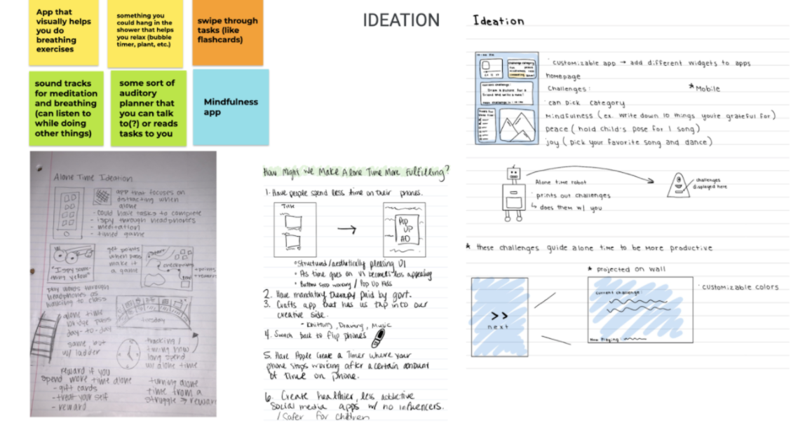

Attentio.
Creator • UI/UX • 2021


Creator • UI/UX • 2021
For my Design Foundations class a small group and I were challenged to create a mindfullness app using Adobe XD. We decided to make an app that have a variety of plants available to unlock, to unlock these plants though you have to complete a set of challenges that are focused around helping you be mindful and take a break.
Next, in class we worked on brainstorming and paper prototyping. We worked to individually take the ideas we talked about together and put them into an experience. Originally we worked with the idea of an app with widgets.

After we selected our final design we created a prototype of that design on Adobe XD. We wanted it to have a 60's feel because that is a very relevant design aesthetic right now. We also wanted to create a lot of positive feedback for the user so they continue coming back to the app.